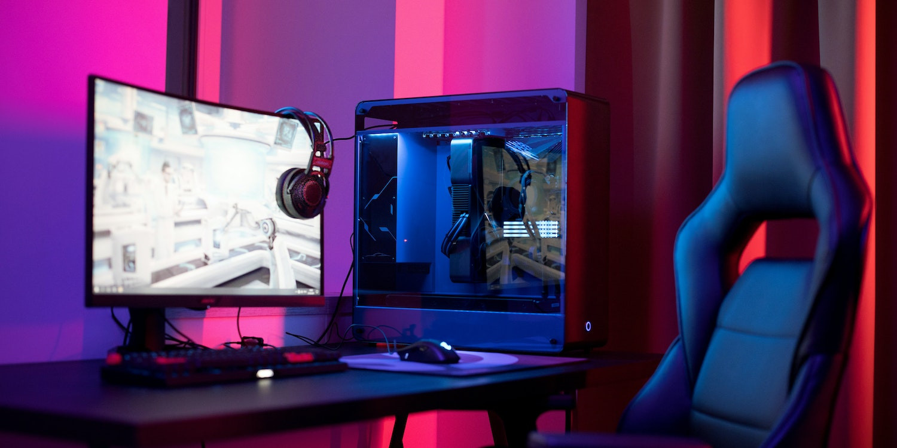

Komputer moją pasją
Strona jest poświęcona wyłącznie komputerom

Pierwszy komputer osobisty z serii Macintosh, stworzonej przez Apple. Zaraz po premierze kosztował 2495 dolarów (około 5555 dolarów w 2012 roku). Tak jak wszystkie klasyczne Macintoshe miał wbudowany mikroprocesor MC68000 przedsiębiorstwa Motorola. Produkowano go tylko w beżowej obudowie. Jego następca, Macintosh 512K, został wprowadzony we wrześniu 1984 roku. 128K posiadał bardzo ostry, 9-calowy, 1-bitowy monitor CRT o rozdzielczości 512 × 342 pikseli, zaprojektowany tak, by można było na nim otrzymywać efekty graficzne takie, jak na ówczesnym sprzęcie za 10 000 dolarów. Ustanowił standard DTP na 72 ppi. Poza tym miał wbudowaną stację dyskietek 3,5 cala oraz wcięcia na górze umożliwiające bezproblemowe podniesienie komputera i przeniesienie go w inne miejsce. Za największą wadę konstrukcji uważa się brak wentylatora, który został wprowadzony dopiero w modelu Macintosh SE w 1987. 128K był przez to bardzo cichy, ale szybko się nagrzewał, co prowadziło do częstego przegrzewania się komponentów, których wymiana była dosyć kosztowna. Duży sukces odniosły więc poradniki pomagające w samodzielnej naprawie Maca, np. The Dead Mac Scrolls i Macintosh Repair & Upgrade Secrets. Prowadziło to do tego, że był nazywany „beżowym tosterem”. |

Komputery biurowe |

Komputery Gamingowe |